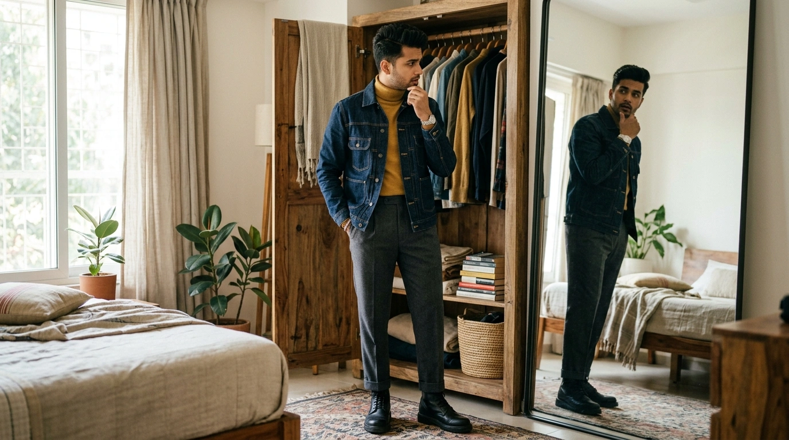

Published: August 13, 2026 • Masterclass Guide
Why Do My Outfits Look Bad Together? 7 Reasons Your Clothes Don't Feel Right

You put on a shirt you love. The fabric is premium, the cut is great, and it sits perfectly on your shoulders. You pair it with trousers that fit well, and step into a pair of quality shoes. But as you look into the full-length mirror, a wave of disappointment sets in: “Why do my outfits look bad together?”
This frustration is incredibly common. You know that none of the individual clothing items are bad—in fact, each piece looks great hanging in your closet on its own. Yet when you combine them into a single outfit, the look somehow feels awkward, clashing, or visually disconnected.
The fundamental realization is simple: an outfit is an interconnected system, not a random list of great clothes. When an outfit feels off, the problem is almost never the quality of your clothes—it is the subtle relationship between colour, contrast, proportion, formality, and context. Here is why your clothes clash and how to fix them effortlessly.
Why Do My Outfits Look Bad Together?
Outfits look bad together when individual garments fight each other across seven core styling dimensions: colour undertones, contrast levels, silhouette proportions, conflicting formality, competing focal points, missing visual links, or occasion context mismatches.
Your Clothes Can Look Good Individually and Still Look Wrong Together
When we shop, we evaluate garments one at a time. We buy a jacket because the green linen texture is gorgeous; we buy trousers because dark denim is versatile; we pick sneakers because they are comfortable.
However, when you stand dressed in your room, your eye doesn't process these items independently. It perceives the overall balance of colour, contrast, proportion, visual weight, formality, texture, and context simultaneously. If these seven elements send conflicting signals, the entire outfit feels unbalanced.
1. The Colours Are Fighting Each Other
One of the most frequent reasons why outfits look off is colour undertone clash. Garments have undertones—they are either warm (yellow/golden-based, like mustard, olive, or warm tan) or cool (blue/pink-based, like icy blue, cool grey, or magenta).
When you pair a shirt with a warm golden undertone alongside trousers with a stark, icy-cool undertone, the combination can feel visually discordant. High contrast can be intentional, but random contrast often just feels disconnected.
3 high-saturation saturated shades competing without a neutral anchor creating visual noise.
Harmonious navy neutral base anchored by soft cream and warm cognac leather accent details.
2. The Contrast Level Doesn't Feel Balanced
Contrast refers to the degree of lightness or darkness difference between your top and bottom garments. High contrast (a pure white shirt with jet-black trousers) creates a sharp visual divide at your waist. Low contrast (a beige sweater with taupe trousers) creates a smooth, continuous column.
Neither high nor low contrast is wrong. However, if your natural personal features (skin tone, hair, and eye intensity) are soft and low-contrast, wearing an extremely harsh black-and-white outfit can make your clothes wear you rather than highlighting your face. Discover how to match contrast to your skin tone in our guide to AI Personal Colour Analysis →
Low-to-Medium Contrast
Soft visual flow. Ideal for softer complexions and elegant monocolour styling.
High Contrast
Sharp waistline break. Works best when intentional or paired with vivid complexions.
3. The Proportions Are Fighting Each Other
Outfit harmony is as much about silhouette geometry as it is about colour. When you combine an oversized, bulky knit sweater with voluminous wide-leg palazzo trousers, the entire look can lose shape and appear heavy.
Creating balance relies on volume counterweights. A voluminous wide-leg bottom often pairs gracefully with a fitted or tucked-in top. Conversely, an oversized jacket can look sharp when anchored by tailored slim trousers or a sleek base layer.
Oversized Top + Wide Trousers
Heavy visual weight on both halves removes body structure.
Boxy Jacket + Slim Tapered Trousers
Creates clean proportions and defined visual structure.
4. The Formality Doesn't Match
Mixing formality levels can be a sophisticated styling technique (like pairing a casual denim jacket over a sleek slip dress). However, when formality is mixed accidentally, the outfit feels confused.
For example, pairing a structured, padded formal wool blazer with athletic gym shorts and neon running shoes creates conflicting visual signals. Before stepping out, ask yourself: “What overall formality level am I aiming for?”
Keep adjacent pieces within 1 step on the formality spectrum to avoid accidental styling clash.
5. Too Many Visual Signals Are Competing
If every piece in your outfit is shouting for attention, the viewer's eye has nowhere to rest. A loud printed shirt, heavy distressed denim, bright red shoes, a patterned scarf, and statement jewelry create visual clutter.
Follow a simple focal point hierarchy: select one star piece, and let the rest of your outfit serve as the supporting cast. If you choose a vibrant patterned coat, keep your sweater, trousers, and shoes understated and neutral.
6. The Pieces Don't Share a Visual Link
Sometimes an outfit feels "off" simply because the garments don't appear to belong to the same story. They lack a common thread connecting them.
A visual link can be a repeated colour, a shared texture, or a common accent detail. For instance, pairing a navy shirt with brown loafers feels instantly intentional if your watch strap or belt repeats that same warm brown leather tone.
7. The Outfit Doesn't Match the Occasion
An outfit can be color-coordinated and perfectly fitted, yet still feel completely wrong if it clashes with where you are going or the weather outside.
Wearing heavy wool trousers to a humid outdoor summer lunch, or wearing a delicate silk outfit on a rainy commute, creates discomfort that reflects in how you carry yourself. Context is the final test of outfit harmony. Explore how to build context-aware outfits in our guide to the AI Outfit Planner →
A Simple 5-Question Outfit Check
Before leaving the house, stand in front of your mirror and run through this quick 5-question diagnostic checklist:
Do these colours work together?
Are the undertones (warm vs. cool) harmonising, or are two bright shades fighting for dominance?
Is the contrast level intentional?
Does the light-to-dark divide feel balanced against your natural skin tone and hair contrast?
Does the silhouette feel balanced?
Is there a clear volume balance (e.g. fitted top + relaxed bottom, or oversized layer + tailored trousers)?
Is the formality consistent?
Are your top, bottom, and shoes communicating the same style language (smart casual, business, or casual)?
Does this outfit suit the occasion?
Is the fabric weight, layer count, and overall vibe practical for where you are going today?
An Example: Why This Outfit Feels “Off”
Let's look at a concrete styling example to see how small tweaks transform a clashing outfit into a cohesive look:
Cobalt Shirt + Purple Trousers + Red Sneakers
What's going wrong: Three vivid primary/secondary colours are competing for attention without a neutral base. The bright athletic sneakers clash in formality with the structured trousers.
Cobalt Shirt + Dark Navy Trousers + Brown Loafers
Why it works: The cobalt shirt becomes the single hero accent piece. The dark navy trousers provide a harmonious neutral base, and warm brown leather loafers add a clean visual link.
How to Fix an Outfit Without Changing Everything
When an outfit feels wrong, you don't need to strip down and start from scratch. Use this 1-step troubleshooting method: change only ONE element at a time until the balance settles.
- 1. Change the shoes first: Footwear grounds your look. Switching from athletic sneakers to leather loafers or minimalist white sneakers often resolves formality conflicts instantly.
- 2. Introduce a neutral base: If your top and bottom are clashing in colour, swap one of them for a classic neutral like navy, beige, grey, or black.
- 3. Remove one accessory: If your outfit feels visually noisy, remove a patterned scarf or statement bag to let the core garments breathe.
- 4. Tuck or untuck your shirt: Altering where your shirt meets your waistband changes your visual torso-to-leg proportions without changing your clothes.
What If You Still Can't See the Problem?
If you find yourself repeatedly struggling to understand why your clothes don't feel right together, mental decision fatigue may be overwhelming your styling instincts. Evaluating dozens of physical garments in your head is hard work.
This is where smart digital tools make a significant difference. A Digital Wardrobe → gives you a clean visual inventory of your garments on your phone, while an AI Outfit Planner → automatically calculates colour harmony, formality matching, and occasion context to generate complete outfits from clothes you already own.
Why Your Personal Colours Matter Too
An outfit can be internally coordinated—with matching formality, proportions, and visual links—yet still fail to light up your face.
When garment shades clash with your natural skin undertone, depth, or contrast, the outfit can leave you looking tired or pale. Aligning your clothing palette with your natural complexions completes the final piece of the styling puzzle. Explore our guide to AI Personal Colour Analysis →
The Goal Isn't Perfect Rules
Ultimately, great style is not about following rigid fashion dictates or memorizing strict rules. Colour harmony, contrast balance, proportions, formality, and occasion context are simply tools to help you express yourself with confidence.
If you want to eliminate morning styling friction entirely, Colourity brings these tools together into one seamless mobile app—analyzing your personal colours, digitizing your closet, and planning harmonious outfits from the clothes you already own.
Related Masterclass Guides
Outfit Coordination FAQs
Outfits look bad together when the individual garments clash in colour undertones, contrast levels, silhouette proportions, formality levels, or competing focal points. An outfit is an interconnected system, so individual pieces must share visual links to feel intentional.
Garments bought independently are often designed for different contexts or formality levels. When paired, their individual details—like heavy textures against thin fabrics or conflicting warm/cool undertones—can create visual friction despite each item looking attractive on its own hanger.
Check your outfit against five key dimensions: colour harmony, contrast balance, silhouette proportion, consistent formality, and occasion context. If at least three of these elements align, the combination will generally feel cohesive.
Anchor your outfit with a primary neutral base (such as navy, cream, grey, or beige), add a complementary accent shade, and ensure the undertones (warm vs. cool) harmonise across your top and bottom garments.
An outfit usually feels off because of accidental clash—such as pairing an ultra-casual hoodie with formal dress shoes, or having too many competing focal points (like loud patterns combined with bright sneakers).
Introduce a visual link: repeat a colour or texture across your outfit (like matching your belt leather to your shoes, or repeating a subtle accent colour from your shirt in your socks or watch strap).
Plan Outfits That Work Together
Download Colourity on Android to digitise your wardrobe and generate harmonious looks for free.
Get Colourity AppOnce you've got the pieces, Colourity's AI outfit planner can turn them into complete looks for you.
Not sure where you fall? a personal colour palette check gives you a starting point before you commit to any of these picks.
Related reading: What Colors Go Together in Clothing? A Practical Guide to Outfit Colour Combinations · How to Create Outfits From Clothes You Already Own · How to Color Block Your Outfits: The Indian Fashion Guide